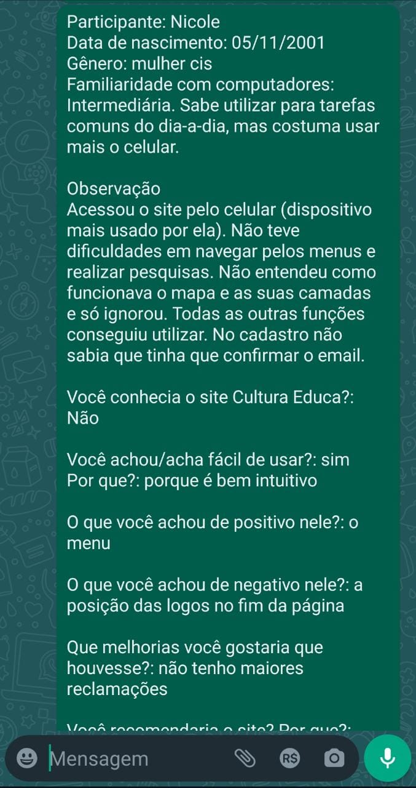

Cultura Educa Avaliação
Home
Extreme User Interview
Participante:
Nicole
Data de nascimento:
05/11/2001
Gênero:
Mulher Cis
Você conhecia o site Cultura Educa?
Não
Você achou/acha fácil de usar?
Sim, porque é bem intuitivo.
O que você achou de positivo nele?
O menu
O que você achou de negativo nele?
a posição das logos no fim da página
Que melhorias você gostaria que houvesse?
não tenho maiores reclamações
Você recomendaria o site? Por que?
Não, porque há meios melhores de achar esses lugares.
Você pretende começar/continuar a usar?
Não, porque já conheço os lugares que pretendo frequentar.
Fly on the Wall
Observação
Acessou o site pelo celular (dispositivo mais usado por ela). Não teve dificuldades em navegar pelos menus e realizar pesquisas. Não entendeu como funcionava o mapa e as suas camadas e só ignorou. Todas as outras funções conseguiu utilizar. No cadastro não sabia que tinha que confirmar o email.
